| id | oat | cit | ubicacion | long | lat | estado | producto | volumen | ano_montaje | empresa | taah | archivo_doc | e_virolas | e_altura | e_diametro | e_espesor1er_virola | tipo_de_techo | medicion_de_asent_dif | medicion_de_corrosion | comentarios | dc_individual | dc_compartido | dc_dimensiones | resultado_informe | adjuntos | tipoinforme |
|---|---|---|---|---|---|---|---|---|---|---|---|---|---|---|---|---|---|---|---|---|---|---|---|---|---|---|
| 92 | 24/15 | 1 | TERMOELECTRICA GUILLERMO BROWN CERRI- BAHIA BLANCA | 62°25'3.07"O | 38°41'8.81"S | EN SERVICIO | BIODIESEL | 5000 | 2015 | Termoeléctrica Guillermo Brown | TK 5 | Informe Borrador TGB | 5 | 10.55 | 28.0 | NA | F | NO | SI | NA | SI | NA | NA | APTO | I1.JPG;I2.JPG;I3.JPG | INFORME DE INSPECCION EXTERNA |
| 416 | 260/20 | 2 | PLANTA DE INYECCIÓN DE AGUA N° 3 | 68°57'59.27"O | 33°18'23.23"S | FUERA DE SERVICIO | EN TRAMITE | 500 | NA | F S.A. | TKS 000021 | INFORME MODELO 2019 VP3 | 5 | 7.50 | 9.1 | 6.35 | F | SI | SI | RECINTO DE CONTENCION EN CONSTRUCCION | NA | NA | NA | APTO | i1.JPG;I10.JPG;I2.JPG;I3.JPG;I4.JPG;I5.JPG;I6.JPG;I7.JPG;I8.JPG;I9.JPG | INFORME DE CONDICION TECNICA |
| 180 | 86/17 | 11 | NA | NA | NA | NA | NA | NA | NA | YPF S.A. | NA | Anexo Asentamiento TK 1001 | NA | 87.60 | 26.7 | NA | F | SI | NA | Verificacion de asentamiento | NA | NA | NA | NA | NA | ASENTAMIENTO DIFERENCIAL |
Daños y vulnerabilidad de estructuras laminares
Infraestructura de almacenamiento y proceso
Matias Nestasio
Emiliano Estrada
Javier Vassallo
1 - INTRODUCCIÓN
Objetivo general
El objetivo general es evaluar daños y caracterizar la vulnerabilidad de tanques de almacenamiento y otras estructuras laminares típicas de la industria petrolera argentina bajo acciones de viento y fuego.
Preguntas
El presente trabajo busca responder las siguientes preguntas:
¿Cómo pueden caracterizarse los tanques incluidos en la base de datos desde el punto de vista de dimensiones, tipos de techo, ubicación, fluido?
¿Es posible obtener alguna caracterización de los riesgos mas frecuentes?

2 - BASE DE DATOS
Los datos sobre los tanques, objeto de análisis, se extrajeron de informes realizados durante los años 2015 al 2022, los cuales se encontraban clasificados según el tipo de auditoría realizada.
En algunos casos, las auditorías técnicas son de condición interna ó externa, de control, de medición, de mantenimiento y en otros, se trata de auditorías ambientales, de seguridad, de asentamiento, de abandono de uso de tanques o de reparación, involucran variables ambientales, que tratan, el entorno del tanque y/o la infraestructura existente en los alrededores. El criterio de inclusión de los tanques en la base de datos es que su volumen sea mayor o igual a 500m3, priorizando aquellos tanques, que, por su escala operativa, representan un mayor riesgo potencial y mayor probabilidad de daños.
A continuación, se explican los parámetros observados de las auditorias.
Información Disponible
- Identificación
- Ubicación (Lat/Long)
- Estado
- Producto
- Prop. Físicas
- Año de Montaje
- Empresa
- Virolas
- Resultado del informe
- Diques de Contención
- Tipo de Techo
- Corrosión y Asentamientos
- Comentarios y Adjuntos
Variables: id, oat, cit y taah.
El número cit permite reconocer el tanque dentro del sistema de la base de datos de la organización que realiza las auditorias. En este caso, el número de oat, es la identificación interna para determinar el origen de la información (número de informe/año de informe) y también sirven a esta función las variables id y taah.
Variables: long, lat.
La ubicación es importante a la hora de reconocer el tipo de clima al que se encuentra expuesto el tanque, como lo es por ejemplo la velocidad del viento a la que tiene que resistir. De la misma manera, el efecto del sismo, el tipo de suelo, la intensidad de lluvia, etc. Estas representan cargas externas, para lo cual la infraestructura debe estar preparada para soportar y seguir en servicio.
Variables: estado.
Esta variable, permite conocer la situación del tanque, ya que implica, un escenario de carga y una condición de contorno diferente para la estabilidad del tanque.
En operación, se puede considerar la condición de máxima presión hidrostática, asumiendo para este estado como un tanque lleno. Como señala Herrera (2007) en su documento, el líquido genera presiones que ante un sismo, puede aumentar el riesgo de pandeo de pata de elefante en la base, por superarse el límite crítico si el tanque es esbelto, H/D > 0.7. En la condición de vacío, el tanque es mas liviano y mucho mas vulnerable al viento. Por lo tanto, la relación de esbeltez también incide en una posible falla de pandeo por presión externa, lo cual se agrava, si el tanque no se encuentra rigidizado correctamente. La condición de abandono, determina que el tanque se encuentra listo para su reemplazo o que ha terminado su vida útil dentro de la planta o batería a la que pertenece. Sin embargo, cuando estos activos están presentes dentro de la infraestructura, existe un mayor riesgo de fallas catastróficas, debido a el avance de la corrosión que pueden tener, o al debilitamiento de sus componentes estructurales. Como consecuencia, mayor riesgo de daños en tanques cercanos que se encuentren en operación.
Variables: producto.
Saber el producto que almacena un tanque es de gran importancia para realizar un análisis preciso de riesgos. Esto incluye comprender sus propiedades físicas y químicas, como la densidad, la volatilidad, la inflamabilidad y la toxicidad. Estos datos son esenciales para evaluar y mitigar posibles riesgos de seguridad, protección ambiental, y salud publica asociados con el almacenamiento y manipulación del producto. Es posible determinar el impacto que tiene la llama en función del tipo de combustible que participe en algún evento de explosión o incendio que involucre baterías de tanques, o plantas de refinerías. Por otro lado, según el trabajo de Herrera (2007), se menciona que el daño depende de las presiones hidrodinámicas, por lo tanto, el tipo de fluido define la masaoscilante máxima posible. Un fluido más denso incrementará las presiones de confinamiento y las fuerzas de inercia ante un sismo, aumentando la probabilidad de llegar al estado de “pata de elefante” incluso si el tanque no está al 100% de su capacidad. Los fluidos más pesados, y densidades más altas, requieren mayor esfuerzo de corte en la base y por lo tanto, mayor carga que podría desencadenar en mayor probabilidad de asentamientos. Fluidos más livianos o refinados, aunque tengan menor densidad, presentan tanques con mayor riesgo de incendio y por otro lado, de volcamiento, si no se encuentran anclados.
Variables: volumen, e_altura, e_diametro.
Aspectos como el tamaño, la forma, el espesor de las paredes y la ubicación de las soldaduras tienen un impacto directo en como se distribuyen las cargas y las tensiones dentro del tanque. Además de la evaluación de la resistencia se evalúan las deformaciones que se producen en función de la geometría del tanque frente a solicitaciones externas, como se puede observar en “Daño sísmico de tanque de acero” (Juan Carlos Herrera, 2007). En dicho trabajo, se plantean los daños que se observaron en distintos eventos sísmicos y el análisis del parámetro H/D como predictor de modos de falla. Tanques esbeltos H/D > 0,7 son tanques mucho más vulnerables a grandes esfuerzos de compresión en la base, generando pandeo “pata de elefante” (Figura 6‑4).
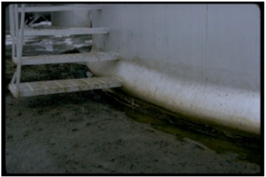
Figura 6‑4: Pandeo “pata de elefante” de la pared. Alaska-1964. (Juan Carlos Herrera, 2007)
Es fundamental aclarar que la relación entre la esbeltez y el volumen de los tanques no es lineal. La probabilidad de que un tanque sufra un daño severo (DS-4 o DS-5) aumenta considerablemente a medida que se incrementa la relación H/D. Un tanque que es tanto de gran volumen como esbelto enfrenta un riesgo estructural mucho mayor en comparación con uno que tiene el mismo volumen pero un diámetro más amplio.
Variables: ano_montaje.
Conocer el año de montaje permite determinar la edad del tanque y los años en servicio. Una función importante de analizar, podría ser los daños más frecuentes en base a los años en servicio. Como lo es, la corrosión del metal ya que se trata de un proceso de degradación con el paso del tiempo. Conocer si el tanque cumple o no con las regulaciones vigentes, analizar la evolución de los estándares de diseño, realizar análisis de seguridad ya que tanques más antiguos pueden tener más problemas de corrosión o desgaste que podrían comprometer su integridad. Por otro lado, la edad del tanque permite planificar el tipo de mantenimiento necesario para garantizar la seguridad y el cumplimiento normativo de las instalaciones petroleras. Por otro lado, tanques de mayor edad, han pasado por más ciclos de llenado y vaciado, lo que suele derivar en asentamientos diferenciales.
Variables: empresa.
Conocer la empresa puede dar información de la distribución de los tanques según se trate de una operadora o algún tipo de planta, como una refinería. En el caso de un tanque con mayor vulnerabilidad estructural, y que se encuentre en una infraestructura densamente poblada, puede provocar una falla o un colapso, ocasionando un desastre en cadena. El tamaño y tipo de empresa, puede correlacionarse con el rigor de sus programas de mantenimiento, parques más grandes de activos suelen tener protocolos de inspección muy estrictos y presupuestos asignados para reparaciones preventivas. A veces empresas más pequeñas o de servicios, operan con márgenes de inversiones más ajustados.
Variables: e_espesor1er_virola y e_virolas.
ESPESOR PRIMER VIROLA
Como se mencionó en las propiedades físicas, el espesor influye en la resistencia del tanque frente a la acción externa sobre su superficie. A partir del espesor de la primera virola, se puede determinar el resto de los espesores a través del “Método de un Pie” para tanques de diámetro menores a 60m. Este valor es importante, debido a que la primer virola es la que recibe mayor presión y relacionando esto con la edad del tanque, es posible analizar la perdida de integridad del tanque. Por otro lado, también es la que recibe mayor carga vertical y esto para tanques esbeltos H/D > 0.7, según Herrera (2007), produce mayor riesgo de pandeo.
CANTIDAD DE VIROLAS
Conocer la cantidad de virolas, ayuda a comprender la capacidad de almacenamiento, estabilidad estructural, además facilita la inspección y el mantenimiento adecuado. Además, un tanque con bastantes virolas cortas exhibe un comportamiento levemente diferente al de uno con escasas virolas más altas ante fenómenos de abolladura.
Variable: resultado_informe.
Esta información permite conocer las tareas a realizarse en el tanque, en función del resultado de la auditoria. Así se puede extrapolar la vida útil remanente del tanque, conocer los procesos de mantenimiento y/o reparación aplicados, conocer la eficiencia operativa y la fiabilidad de las instalaciones de almacenamiento de productos almacenados.
Variables: dc_individual, dc_compartido y dc_dimensiones.
Los diques de contención son parte de la infraestructura de los tanques y forman parte de un requisito obligatorio. Desde un punto de vista ambiental interesa conocer el estado de dicha contención o su existencia frente a la posibilidad de derrames, y/o protección de la infraestructura circundante. Por otro lado, frente a la acción del viento, es posible estudiar el efecto que tienen estas estructuras en como pantallas frente a la superficie de un tanque.
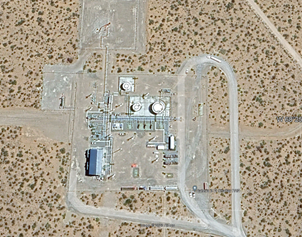 |
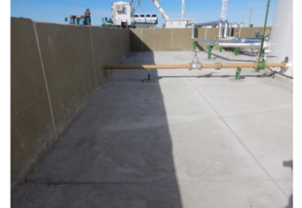 |
Figura 6‑6a: A la izquierda, lay out en imagen satelital. A la derecha, imagen de interior del recinto de contención
Variable: tipo_de_techo.
El tipo de techo puede afectar la seguridad operativa del tanque, los techos flotantes son más propensos a problemas como la acumulación de gases inflamables debajo del techo. Algunos tipos de techos son más adecuados para ciertos tipos de productos petrolíferos ligeros, mientras que los techos fijos pueden ser más adecuados para productos más pesados o viscosos. Por otro lado, el tipo de techo puede influir en los requisitos de mantenimiento y reparación del tanque. Los techos flotantes pueden requerir inspecciones más frecuentes y mantenimiento especializado. El tipo de techo influye en el comportamiento estructural del tanque frente a acciones térmicas, ya que estas generan muchas deformaciones. También frente a la acción del viento sobre la corona del tanque, y por otro lado, en tanques bajos (H/D < 0.7), según las curvas de fragilidad del documento “Daño sísmico de tanque de acero” (Juan Carlos Herrera, 2007), se demostró que son más propensos a problemas de sloshing (oleaje) afectando la estructura del techo.
Variables: medicion_de_corrosion y medicion_de_asent_dif.
La corrosión puede comprometer la integridad estructural del tanque, por ello, conocer la existencia de estas mediciones puede colaborar en el desarrollo de medidas preventivas y correctivas, teniendo en cuenta las consecuencias y el estado operativo del tanque.
Los asentamientos pueden indicar problemas de la base del tanque, como la compactación del suelo o falta de capacidad de carga. Conocer la magnitud y la naturaleza de los asentamientos es esencial para evaluar la integridad estructural del tanque ya que se puede comprometer la estabilidad del tanque y aumentar riesgo de falla estructural, incluido vuelco o deformaciones excesivas. Además, los asentamientos diferenciales pueden causar tensiones no deseadas en las soldaduras y juntas del tanque, lo que aumenta el riesgo de fugas y derrames.
Variables: archivo_doc, adjuntos.
En este ítem se pretende resaltar información que pueda ser de utilidad, o aporte mayor claridad del contexto para la interpretación de la base de datos, de manera visual o descriptiva. En algunos casos se adjuntan imágenes, croquis de ubicación y de geometrías.
3 - EDA
ANALISIS EXPLORATORIO DE DATOS
Lectura de los datos
Se comienza importando los datos y cargando las librerías a utilizar en el informe. Se utilizará como marco de referencia el entorno de tidyverse.
Inspección visual
Se realiza una inspección visual inicial de los datos para observar tipos de variables y datos faltantes.
Son 263 individuos (tanques) a los que se les observaron 27 variables. A priori se estima que hay muchos valores faltantes. Desde el punto de vista de ingeniería, el volumen de los tanques es una de las variables más representativas para visualizar las dimensiones estructurales por lo que proponemos un histograma como acercamiento inicial al tema:
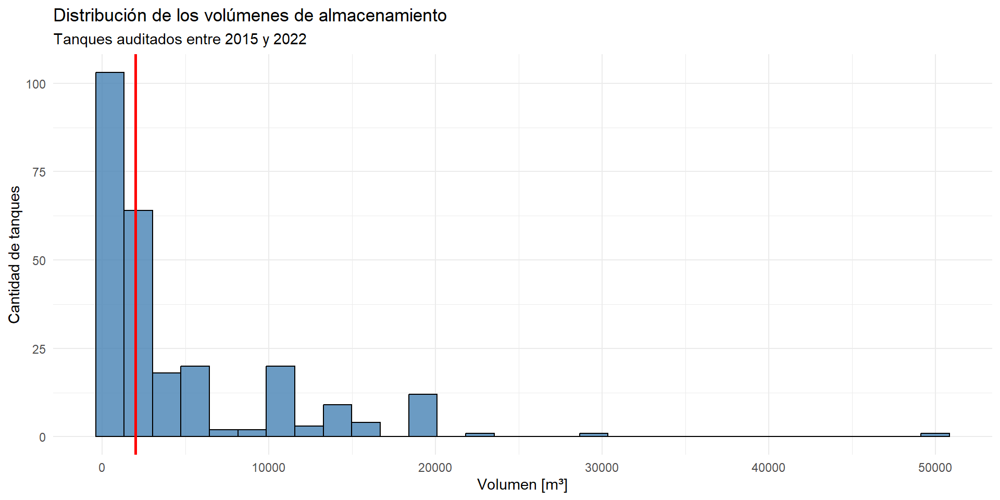
La distribución presenta una fuerte asimetría positiva, concentrándose la mayoría de los tanques en capacidades bajas y medias. Los tanques de gran volumen constituyen una proporción reducida de la muestra, aunque poseen mayor relevancia desde el punto de vista de las consecuencias potenciales ante una falla estructural.
La mediana indicada con la línea vertical roja es igual a 2000 metros cúbicos.
Luego, cada registro representa un informe técnico, por lo que visualizamos los resultados que se obtuvieron:
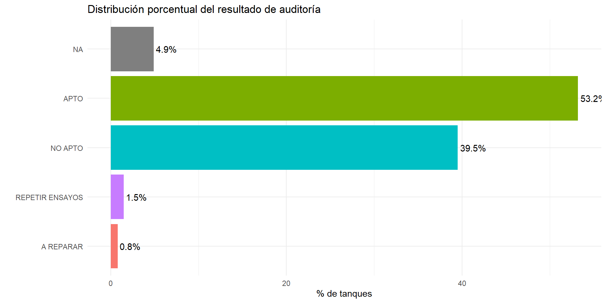
Es de notar que solo el 53% de los tanques relevados se clasificaron como aptos, lo que da un primer indicador del estado general de la infraestructura relevada, poniendo en contexto que se trata de estructuras críticas cuya falla puede tener consecuencias ambientales, economicas y sociales severas.
Además puede ser una variable de interés para aplicar métodos de clasificación en función de otras variables.
Previo a profundizar en otras caracterizaciones procedemos con la limpieza y ordenamiento de datos.
Valores faltantes (var)
En la inspección visual se observa una gran cantidad de datos faltantes distribuidos en todas las variables, por lo que se procede a identificar la cantidad de valores faltantes.
# A tibble: 6 × 2
variable faltantes
<chr> <int>
1 dc_compartido 248
2 comentarios 150
3 dc_dimensiones 54
4 medicion_de_corrosion 47
5 e_espesor1er_virola 43
6 dc_individual 42Se observa que la variable dc_compartido (que indica si se compartió información sobre los diques de contención) es la que mayor cantidad de datos faltantes posee, luego comentarios (comentarios del inspector sobre el informe de auditoría) y en tercer lugar dc_dimensiones. También entra en el top 6 la variable dc_individual.
Como los diques de contención son construcciones con el objetivo de salvaguardar el medioambiente y no forman parte de las propiedades físicas del tanque, y dado que es el punto donde más datos faltantes se observan (344 NA entre las 3), no se utilizará información sobre los diques de contención en el análisis.
Valores faltantes (reg)
Y también se deben revisar los registros para no mantener aquellos que tengan una gran cantidad de datos faltantes. Como criterio se considera que los informes deben tener más datos registrados que ausentes, por lo que al ser 23 variables, se considera que registros con 12 o más NA serán eliminados.
# A tibble: 6 × 2
id num_na
<dbl> <dbl>
1 180 13
2 409 12
3 410 12
4 311 12
5 241 9
6 49 7Por lo tanto, se eliminan 4 registros (id 180, 409, 410 y 311).
Tipo de datos
Se revisa que las variables esten almacenadas con el tipo de dato que corresponde.
Todas las variables se clasificaron en numeric o character.
Las variables cuantitativas están correctamente almacenadas como numeric y no hace falta convertirlas.
| variable | tipo |
|---|---|
| id | numeric |
| cit | numeric |
| volumen | numeric |
| ano_montaje | numeric |
| e_virolas | numeric |
| e_altura | numeric |
| e_diametro | numeric |
| e_espesor1er_virola | numeric |
Pero si bien id es un número, será utilizado como etiqueta, por lo que la convertiremos a character.
Vemos las cualitativas:
| variable | tipo |
|---|---|
| oat | character |
| ubicacion | character |
| long | character |
| lat | character |
| estado | character |
| producto | character |
| empresa | character |
| taah | character |
| archivo_doc | character |
| tipo_de_techo | character |
| medicion_de_asent_dif | character |
| medicion_de_corrosion | character |
| resultado_informe | character |
| adjuntos | character |
| tipoinforme | character |
Descartamos las siguientes variables del análisis:
oat,citytaahporque son etiquetas identificatorias y utilizaremosidcomo identificador del tanque.ubicaciondebido a que su información ya se encuentra con precisión en las variableslongylat.archivo_doc,adjuntosytipoinformepor el hecho de que este estudio se centra unicamente en las propiedades físicas de los tanques y estas variables no aportan información utilizable.
Asignamos a los NA en variables categóricas el estado “DESCONOCIDO”.
La variable tipo_de_techo no es muy explicativa con el nombre de sus categorías. Por ejemplo, utiliza “F” para indicar “tipo de techo Fijo” que puede confundirse con “Flotante”.
Cambiamos esas categorías para evitar confusiones.
Convertimos las variables estado y resultado_informe a categóricas para facilitar su tratamiento.
Productos almacenados
Se debe corregir la variable producto ya que por falta de criterios de estandarización en la toma de datos tiene muchos valores diferentes para indicar lo mismo, por ejemplo, se observa “AGUA + PETROLEO” y también “PETROLEO + AGUA” o “AGUA CON PETROLEO”, etc.
Visualizando los valores que toma la variable identificamos que algunas categorias presentan muchas observaciones, como por ejemplo:
AGUA
PETROLEO
PETROLEO + AGUA
GAS OIL, etc
Por lo que a ellas las dejamos y solo estandarizamos el nombre.
Luego vemos que hay mucha diversidad de productos. Una posible alternativa es agruparlos por su densidad ya que esta propiedad es muy importante para entender las cargas del producto sobre las paredes de los tanques. Las categorías son:
LIVIANOS (~0.65–0.75 g/cm³)
INTERMEDIOS (~0.78–0.83 g/cm³)
PESADOS (~0.83–0.95 g/cm³)
Sin embargo, una simplificación mas consistente es definirlos como derivados de petroleo con una densidad intermedia entre agua y petróleo.
A los restantes los agrupamos en OTROS por no tener información sobre ellos o por no poseer más de una o dos observaciones.
Criterio simplificado, se distingue entre agua, petróleo crudo y derivados de petróleo.
Los productos más representados corresponden a petróleo, mezclas de petróleo y agua, agua de formación y combustibles derivados. Esta diversidad implica distintos escenarios de riesgo asociados tanto a las cargas estructurales como a la peligrosidad frente a incendios o derrames.
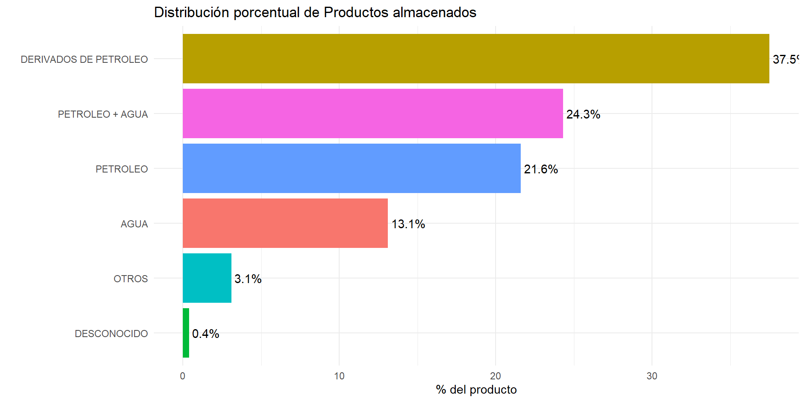
Principales empresas
También se debe corregir la variable empresa ya que por falta de criterios de estandarización en la toma de datos tiene muchos valores diferentes para indicar lo mismo, por ejemplo, se observa “YPF S.A.” pero también “Y.P.F S.A”.
Finalmente podemos ver el ranking de cantidad de tanques por empresa:
# A tibble: 21 × 2
empresa n
<fct> <int>
1 YPF 154
2 PETROBRAS 26
3 PLUSPETROL 15
4 PAN AMERICAN 14
5 VISTA 9
6 ENAP 6
7 TECPETROL 6
8 GEOPARK 5
9 REFINORTE 3
10 TGS 3
# ℹ 11 more rowsY su distribución porcentual.
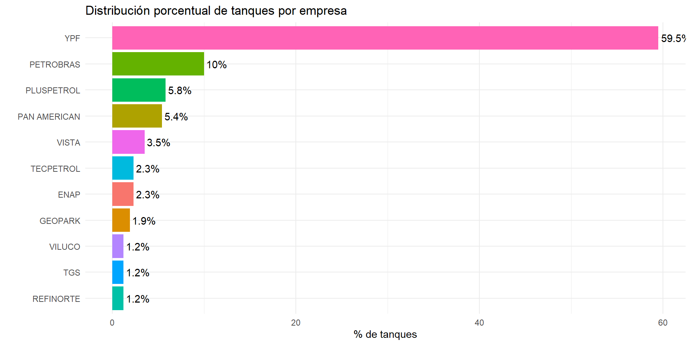
Se observa que practicamente el 60% de los tanques relevados pertenencen a YPF.
Estado operativo de los tanques según reporte
Finalizada la limpieza de datos, se plantea visualmente un gráfico de dos variables cualitativas de interés, resultado de auditoría y estado operativo:
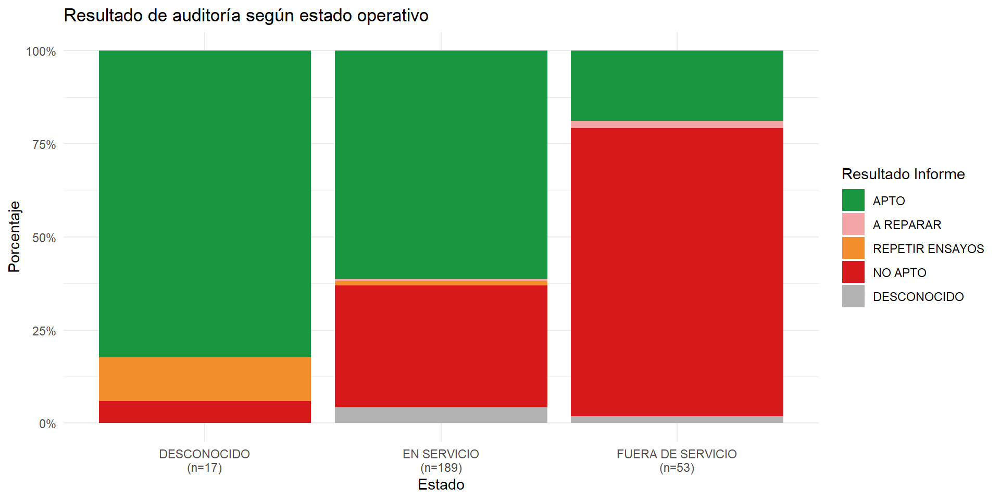
A nivel visual parece haber una asociación entre tanques aptos en servicio y tanques no aptos fuera de servicio que debe explorarse en mayor profundidad.
A las variables lat y long hay que procesarlas para poder trabajar con ellas. Eso se realiza en el punto 3 del informe (Datos Georreferenciados).
Se muestra como quedó la base de datos con las 16 variables seleccionadas:
| id | long | lat | estado | producto | volumen | ano_montaje | empresa | e_virolas | e_altura | e_diametro | e_espesor1er_virola | tipo_de_techo | medicion_de_asent_dif | medicion_de_corrosion | resultado_informe |
|---|---|---|---|---|---|---|---|---|---|---|---|---|---|---|---|
| 92 | 62°25'3.07"O | 38°41'8.81"S | EN SERVICIO | DERIVADOS DE PETROLEO | 5000 | 2015 | T GB | 5 | 10.55 | 28.0 | NA | FIJO | NO | APTO | APTO |
| 416 | 68°57'59.27"O | 33°18'23.23"S | FUERA DE SERVICIO | OTROS | 500 | NA | F SA | 5 | 7.50 | 9.1 | 6.35 | FIJO | SI | APTO | APTO |
| 417 | NA | NA | EN SERVICIO | DESCONOCIDO | NA | NA | YPF | 2 | 6.05 | 10.6 | 6.35 | FIJO | SI | DESCONOCIDO | DESCONOCIDO |
| 406 | 68°12'9.49"O | 38°53'53.16"S | EN SERVICIO | AGUA | 2052 | NA | PLUSPETROL | 8 | 13.33 | 14.0 | 7.94 | FIJO | SI | APTO | APTO |
| 418 | NA | NA | EN SERVICIO | AGUA | NA | NA | VISTA | 8 | 12.20 | 10.0 | 4.76 | FIJO | SI | NO APTO | NO APTO |
| 338 | 68° 18’ 31.30’’ O | 37° 27’ 50.27’’ S | EN SERVICIO | PETROLEO | 1153 | 2007 | PLUSPETROL | 5 | 7.50 | 14.0 | 4.76 | FIJO | NO | APTO | APTO |
Y se verifica que los tipos de datos hayan quedado como se deseaba.
Correlación entre variables
ANÁLISIS DE CORRELACIÓN
Se procede inspeccionar la dispersión de las variables cuantitativas para ver su correlación.
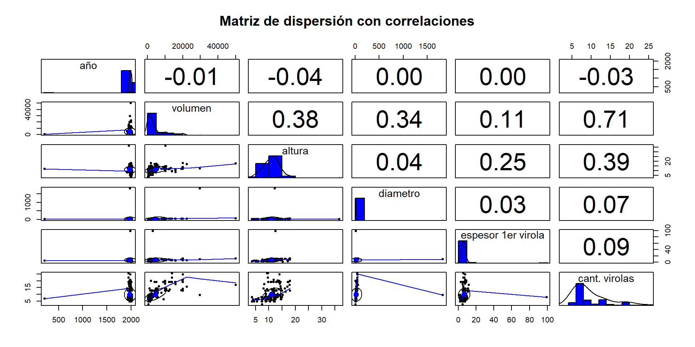
Se observa que no hay correlaciones fuertes entre las variables, siendo la máxima de 0.71 entre el volumen y la cantidad de virolas de los tanques, lo cual concuerda con las características constructivas esperadas pero se esperaría que fuesen un poco mayor ya que en el diseño físico se encuentran fuertemente relacionadas. Se observan también algunos outliers, que se analizan a continuación.
Outliers
En la matriz de dispersión se observaron variables con posibles outliers, por lo que se analizan cada una puntualmente.
AÑO MONTAJE (ano_montaje)
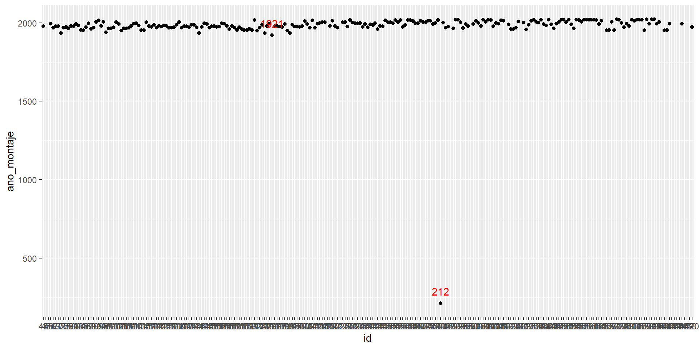
Se detectan dos valores atípicos, un registro del año 212 y uno de 1921. Buscamos los registros.
| id | long | lat | estado | producto | volumen | ano_montaje | empresa | e_virolas | e_altura | e_diametro | e_espesor1er_virola | tipo_de_techo | medicion_de_asent_dif | medicion_de_corrosion | resultado_informe |
|---|---|---|---|---|---|---|---|---|---|---|---|---|---|---|---|
| 281 | 68°16'31.49"O | 37°27'54.95"S | EN SERVICIO | PETROLEO | 465.0 | 212 | PLUSPETROL | 5 | 12.01 | 8.48 | 6.75 | FIJO | NO | APTO | APTO |
| 181 | 62°17'59.66"O | 38°44'44.26"S | EN SERVICIO | DERIVADOS DE PETROLEO | 4869.5 | 1921 | PETROBRAS | 6 | 8.05 | 29.45 | 14.28 | FIJO | SI | APTO | APTO |
Los dos se encuentran en funcionamiento. Se corrige el typo de “212” por “2012” (id = 281).
DIAMETRO (e_diametro)
La variable diametro también muestra un posible outlier.
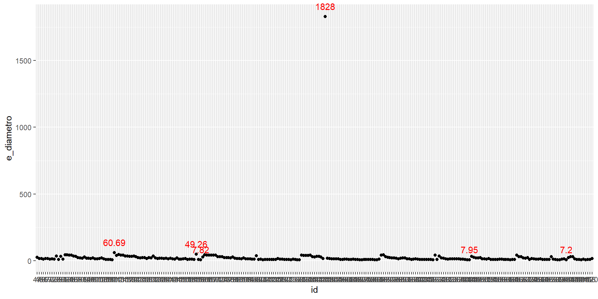
Se observa un outlier superior muy alto (1828) y algunos por debajo de los valores de interés. Calculamos el diametro geometricamente mediante:
\[V = \pi \left(\frac{diametro}{2}\right)^2 altura\]
y observamos los registros comparados con ese valor para un mejor análisis.
| id | volumen_mat | volumen | e_altura | e_diametro |
|---|---|---|---|---|
| 399 | 488.58 | 500.0 | 12.00 | 7.20 |
| 344 | 496.39 | 500.0 | 10.00 | 7.95 |
| 246 | 32018582.02 | 29651.0 | 12.20 | 1828.00 |
| 159 | 494.22 | 500.0 | 10.29 | 7.82 |
| 111 | 51781.81 | 50000.0 | 17.90 | 60.69 |
| 156 | 15932.54 | 15969.8 | 8.36 | 49.26 |
Se observa que hay 5 registros cuyo volumen esperado según el cálculo matemático es correcto por lo que se mantienen en el registro sin cambios. Solo un registro (id = 246) es inconsistente y se debe a un potencial error de tipeo en el diámetro (no existen tanques de 1828m de diámetro) pero si se corrige a 18.28 el nuevo valor de volumen calculado matematicamente (3202) sigue siendo muy diferente al registrado (29651).
Debido a que no se puede identificar correctamente el error pero se sabe con certeza su existencia, se procede a eliminar el registro con id=246.
Como respaldo de la decisión se verifica visualmente que no existen tanques de diámetros mayores a 50 metros para las coordenadas indicadas en el registro id 246.

El volumen de un tanque de 50 metros de diámetro y 12.2 metros de altura es aproximadamente 23954 metros cúbicos, valor aún inconsistente con el registrado. La eliminación del registro sigue siendo la opción más adecuada.
ALTURA (e_altura)
La variable altura también muestra un posible outlier. Lo buscamos:
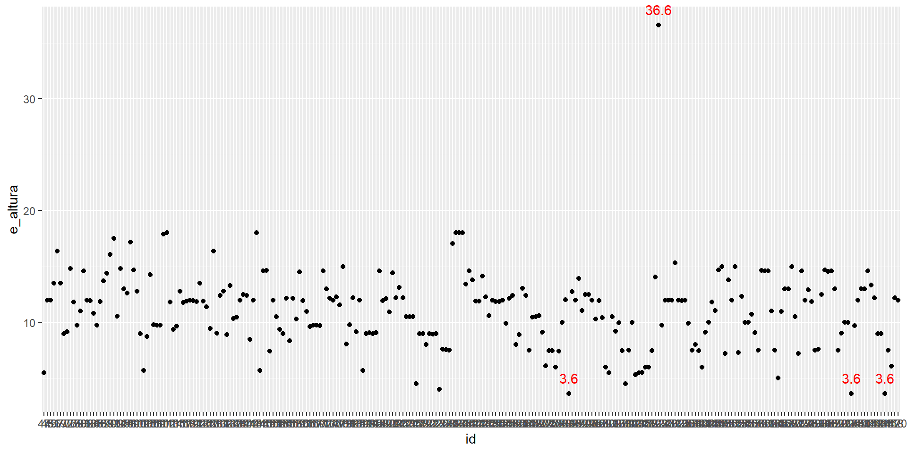
Se observan 1 outliers superior y 3 inferiores para analizar. Vemos los registros (calculando el volumen matemáticamente) para analizar con mayor detalle:
| id | volumen_mat | volumen | e_altura | e_diametro |
|---|---|---|---|---|
| 395 | 504.67 | 500.00 | 3.6 | 13.36 |
| 282 | 477.84 | 464.32 | 3.6 | 13.00 |
| 323 | 2755.09 | 10281.00 | 36.6 | 9.79 |
| 415 | 504.67 | 500.00 | 3.6 | 13.36 |
Los valores inferiores son consistentes, se mantienen.
El tanque con altura de 36.6 metros (id = 323) podría pensarse inicialmente como un error de tipeo pero el calculo de volumen matemático también indica un potencial error en el valor registrado.

La verificación visual indica que el diámetro registrado es incorrecto, se confundió radio por diámetro, la altura no puede verificarse fehacientemente pero es plausible (se observa tanques esbeltos). Al calcular el volumen matemático con el diámetro correcto (19.52 metros) se obtiene un valor de 10953 metros cúbicos, valor consistente con el volumen registrado respaldando el valor de altura como un valor real a pesar de ser un outlier.
Se corrigue el registro, reemplazando el valor del radio por su diámetro:
A pesar de ser un valor válido, sigue siendo un outlier y en posteriores métodos de clasificación ó modelación puede ser requerido filtrarlo para evitar influencias. No se elimina.
VOLUMEN (volumen)
Buscamos los outliers en volumen:
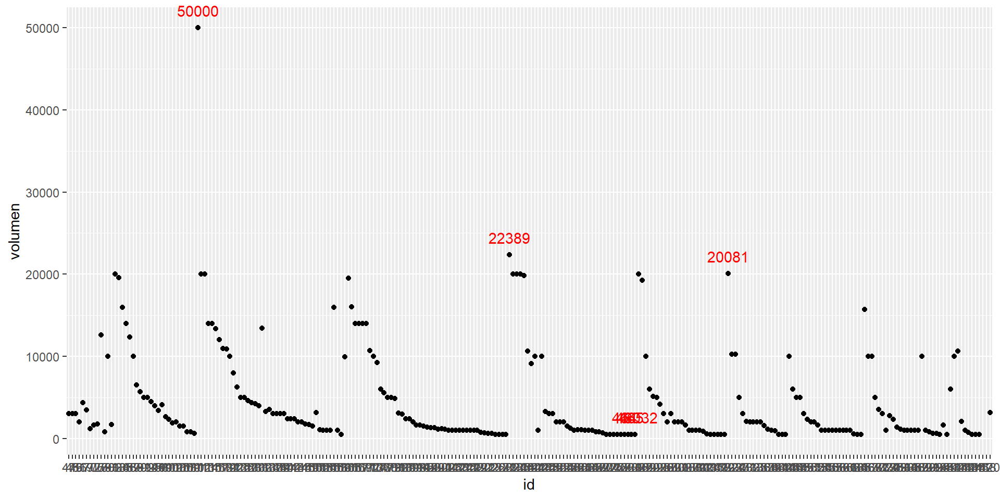
Vemos que hay un volumen de 50.000m3 que es considerablemente grande para un tanque. Revisamos el registro.
| id | volumen_mat | volumen | e_altura | e_diametro |
|---|---|---|---|---|
| 111 | 51781.81 | 50000 | 17.9 | 60.69 |
El registro (id = 111) parece correcto debido a que coincide el valor esperado de volumen calculado con las otras variables (51.782m3) versus el registrado (50.000m3). Pero es un outlier y al no haber más registros en ese orden de volumen sería imprudente hacer inferencias a ese nivel con tan poca información. No se elimina pero debe considerarse esto en el análisis futuro.
Se verifica visualmente el diámetro del tanque para confirmar que el outlier es un dato correcto:

Para mejor visualización se muestra el histograma de tanques auditados finalmente a utilizar en el analisis en función del volumen.
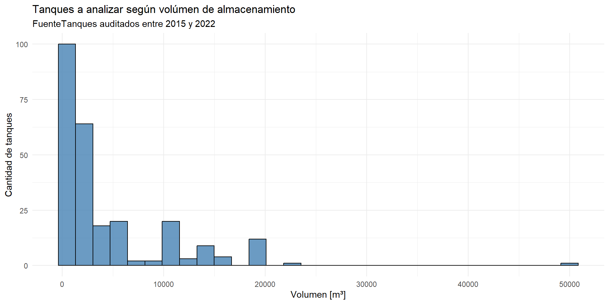
DISTANCIA DE COOK
Se calcula la distancia de Cook para saber si algun dato va a influenciar los modelos.
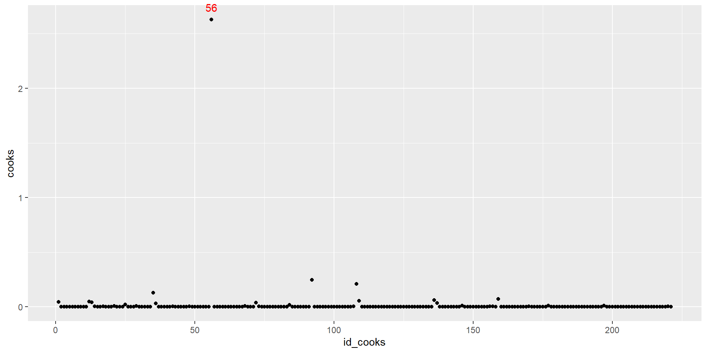
De la gráfica de distancia de Cook se observa un registro muy influyente (mayor a 1). Por lo que se procede a su revisión.
# A tibble: 2 × 16
id long lat estado producto volumen ano_montaje empresa e_virolas
<fct> <chr> <chr> <fct> <fct> <dbl> <dbl> <fct> <dbl>
1 134 "57°54'53.9… "34°… EN SE… DERIVAD… 3500 1979 YPF 9
2 140 <NA> "34°… EN SE… OTROS 3000 1987 YPF 99
# ℹ 7 more variables: e_altura <dbl>, e_diametro <dbl>,
# e_espesor1er_virola <dbl>, tipo_de_techo <fct>,
# medicion_de_asent_dif <fct>, medicion_de_corrosion <fct>,
# resultado_informe <fct>El registro con id=140 indica 99 virolas cuando lo esperable para sus medidas es 9, por lo que se considera un typo y se modifica a 9.
El registro con id=134 no presenta irregularidades observables. Al realizar un modelo ajustado con las variables de construcción (volumen, altura, etc.) con y sin ese valor para ver como cambian los coeficientes se observa que no hay variación y, por lo tanto, no se modifica.
BONFERRONI
Para finalizar con el analisis de outliers se realiza el test de Bonferroni para encontrar datos influyentes entre las variables de construcción (volumen, altura, etc.).
rstudent unadjusted p-value Bonferroni p
102 -8.390717 6.3130e-15 1.3952e-12
123 4.634573 6.1845e-06 1.3668e-03El resultado arroja que claramente estos dos registros son outliers estadísticamente significativos. Por lo que se procede a revisar esos registros (números de fila = 102 y 123) en busca de posibles errores.
| id | long | lat | estado | producto | volumen | ano_montaje | empresa | e_virolas | e_altura | e_diametro | e_espesor1er_virola | tipo_de_techo | medicion_de_asent_dif | medicion_de_corrosion | resultado_informe | volumen_mat |
|---|---|---|---|---|---|---|---|---|---|---|---|---|---|---|---|---|
| 198 | 57° 54´ 66´´ O | 34° 53´ 9.02´´ S | EN SERVICIO | DERIVADOS DE PETROLEO | 1306 | 1975 | YPF | NA | 14.6 | 12.10 | 7.93 | FIJO | SI | APTO | APTO | 1678.86 |
| 231 | : 68°49'16.41" O | 37°29'02.73" S | EN SERVICIO | PETROLEO | 490 | 2017 | EXXON | 3 | 7.5 | 9.08 | 6.35 | FIJO | SI | APTO | APTO | 485.65 |
Se observa que su volumen (volumen) es coincidente con lo esperado (volumen_mat), por lo que no se modifican.
Colinealidad
Una vez eliminados los outliers volvemos a revisar la correlación y la inflación de la varianza (VIF) para ver si hay colinealidad entre las variables numéricas.
ANALISIS DE CORRELACIÓN
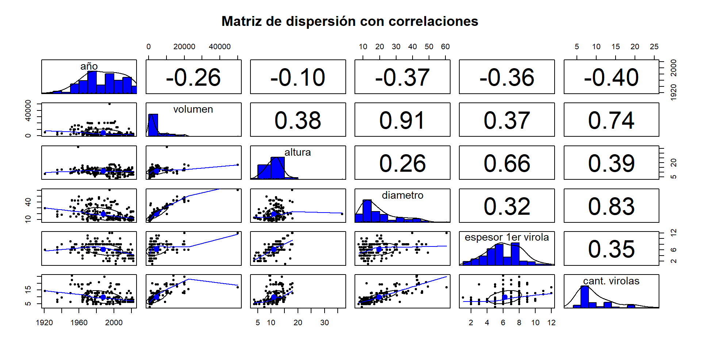
Vemos que aumentaron las correlaciones, ahora si el volumen y el diametro están fuertemente correlacionados (0.91), también lo estan el diametro con la cantidad de virolas (0.83) y el volumen con la cantidad de virolas (0.74), todo lo cual tiene mucho sentido desde la física del problema.
FACTOR DE INFLACIÓN DE LA VARIANZA (VIF)
La variable volumen es la que mayores correlaciones presenta. Calculamos el factor de inflación respecto al resto de variables numéricas.
El VIF se calcula de la siguiente manera:
\[ VIF_j=\frac{1}{1-𝑅_𝑗^2} \]
donde \(𝑅_𝑗^2\) es el coeficiente de determinación de la regresión de la variable \(𝑋_𝑗\) contra todas las demás. Valores mayores a 5 o 10 suelen considerarse problemáticos.
VIF
e_diametro 5.914
e_espesor1er_virola 2.214
e_altura 1.173
e_virolas 1.155
ano_montaje 1.074Los resultados muestran una colinealidad moderada a elevada para la variable diámetro (VIF >2.5), mientras que el resto de las variables presentan valores bajos. Este comportamiento es consistente con las relaciones geométricas esperadas entre diámetro, volumen y altura.
La presencia de colinealidad no debe interpretarse como un error de los datos luego de la limpieza sino como una consecuencia natural de las relaciones físicas existentes entre las dimensiones del tanque. Esta observación justifica, por ejemplo, la aplicación del ACP como herramienta de reducción de dimensionalidad y estudio de la estructura de correlaciones presente en la base.
Esbeltez
Finalmente, se incorpora la variable esbeltez (altura/diámetro) ya que es de relevancia para el análisis de consideraciones estructurales. La presencia de líquido en un tanque genera presiones que, ante un sismo, puede aumentar el riesgo de pandeo de pata de elefante en la base por superarse el límite crítico si el tanque es esbelto (H/D > 0.7). En la condición de vacío el tanque es mas liviano y mucho mas vulnerable al viento, por lo tanto, la relación de esbeltez también incide en una posible falla de pandeo por presión externa.
Exploramos visualmente como se distribuye la variable esbeltez.
Min. 1st Qu. Median Mean 3rd Qu. Max.
0.1697 0.4395 0.6555 0.6937 0.9106 1.8693 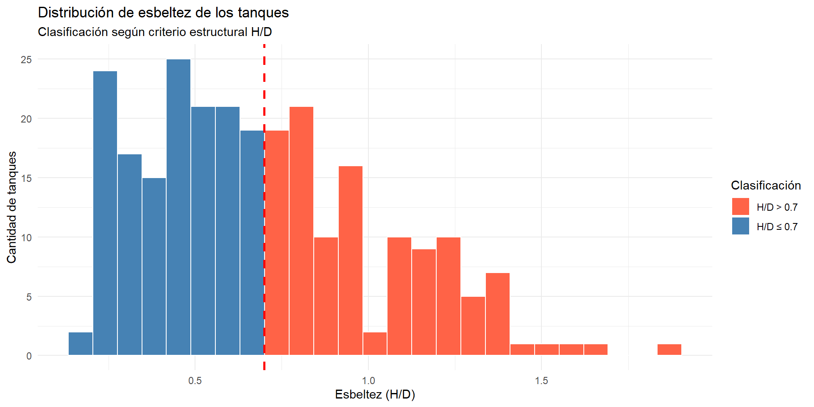
La distribución de la esbeltez muestra que la mayoría de los tanques presentan relaciones H/D inferiores a 0.7, indicando configuraciones con relación de baja estatura y gran diámetro. Sin embargo, también se identifican tanques con valores superiores a dicho umbral, considerados de mayor interés estructural debido a que pueden desarrollar mecanismos de daño asociados al pandeo por compresión en la base durante eventos sísmicos. La esbeltez puede constituir por lo tanto una variable relevante para caracterizar la vulnerabilidad estructural de los tanques analizados.
Imputación NA
A las variables cualitativas que poseian registros con valores faltantes (NA), se las transformó a factores y se les imputo la categoría de DESCONOCIDO.
Con las variables cuantitativas se procede a imputar los valores de datos faltantes según el promedio de los registros agrupados de acuerdo a su variable más correlacionada.
# A tibble: 18 × 2
variable faltantes
<chr> <int>
1 e_espesor1er_virola 41
2 e_virolas 34
3 ano_montaje 17
4 long 4
5 lat 3
6 volumen 2
7 id 0
8 estado 0
9 producto 0
10 empresa 0
11 e_altura 0
12 e_diametro 0
13 esbeltez 0
14 tipo_de_techo 0
15 medicion_de_asent_dif 0
16 medicion_de_corrosion 0
17 resultado_informe 0
18 clase_esbeltez 0La variable e_espesor1er_virola es la que más cantidad de faltantes presenta. De la matriz de correlación que se calculó en el análisis de Colinealidad se observa que la variable que se relaciona más fuertemente con ella de forma positiva es la variable e_altura, por lo tanto, a esos valores faltantes se les imputa el valor promedio de los registros altura similares.
La cantidad de virolas (e_virolas) se correlaciona fuertemente con el e_diametro, por lo que sus faltantes se imputan agrupando los tanques por sus diametros y tomando el promedio de su grupo.
Sería imposible asignar un valor adecuado a ano_montaje por lo que no se imputan valores.
Se revisa que hayan quedado correctamente imputados los NA.
# A tibble: 18 × 2
variable faltantes
<chr> <int>
1 e_virolas 20
2 ano_montaje 17
3 e_espesor1er_virola 7
4 long 4
5 lat 3
6 volumen 2
7 id 0
8 estado 0
9 producto 0
10 empresa 0
11 e_altura 0
12 e_diametro 0
13 esbeltez 0
14 tipo_de_techo 0
15 medicion_de_asent_dif 0
16 medicion_de_corrosion 0
17 resultado_informe 0
18 clase_esbeltez 0Se observan aun datos faltantes en las variables corregidas, eso puede deberse a la falta de registros similares para agrupar. Esos registros se dejan con NA para evitar imputaciones no adecuadas y no se consideraran en los modelos que utilicen esas variables.
4 - DATOS GEORREFERENCIADOS
La georreferenciación agrega una dimensión analítica muy importante al EDA porque permite incorporar el contexto espacial de cada tanque. Por ejemplo, En un estudio sobre vulnerabilidad estructural, la ubicación es fundamental.
Por lo tanto, se procede a transformar las coordenadas a unidades consistentes entre todos los tanques y luego a coordenadas geográficas del sistema de referencia WGS84 (EPSG:4326), para representarlos en un mapa satelital.
Como primer paso, las variables de coordenadas deben corregirse, ya que por falta de criterios de estandarización en la toma de datos, se observan valores sin referencia a latitud Norte/Sur ó longitudes Oeste/Este, como tambien referencias a ellas en Español y en Inglés.
Se opta por referencias con coordenadas geográficas decimales (o grados decimales) donde su signo es positivo para latitud Norte y longitud Este y negativo para latitud Sur y longitud Oeste
Min. 1st Qu. Median Mean 3rd Qu. Max.
-51.61 -38.70 -37.34 -36.67 -34.88 -22.20 Min. 1st Qu. Median Mean 3rd Qu. Max.
-69.75 -68.95 -68.20 -65.50 -60.73 -57.55 Ubicacion de los tanques
Todos los tanques observados objetos de estudio, se encuentran dentro del territorio Argentino. A modo de corroboración los ubicamos según sus coordenadas transformadas.
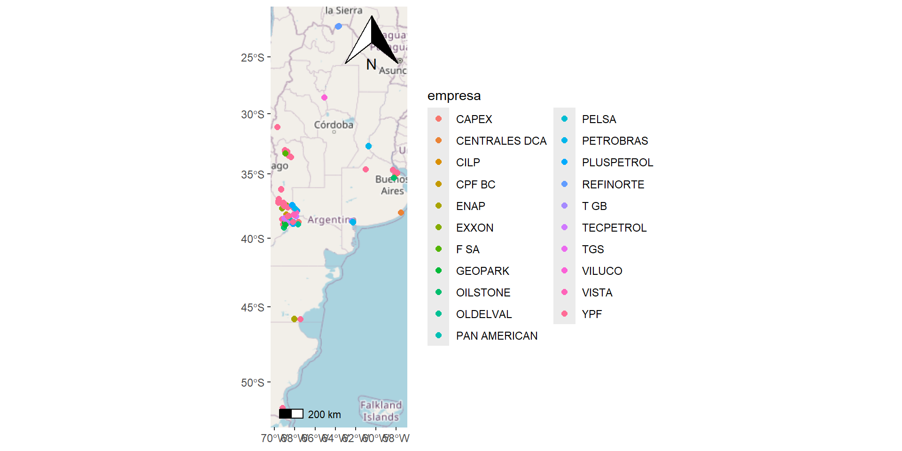
Se procede a crear un mapa interactivo clasificando a los tanques según su Estado:
El estado del tanque es relevante en sus consideraciones estructurales, si se encuentra EN SERVICIO implica que usualmente almacena líquidos y por lo tanto las consideraciones sísmicas son mas relevantes, mientras que si estado es FUERA DE SERVICIO, implica que el tanque esta vacío y por lo tanto las consideraciones de vientos son las mas relevantes.
Riesgo por sísmos
Las consideraciones respecto a nivel de riesgo por acción sísimica se toma de la siguiente referencia.
(Fuente: https://www.argentina.gob.ar/inpres/ingenieria-sismorresistente/zonificacion-sismica,
https://www.inpres.gob.ar/desktop/
Reglamento INPRES-CIRSOC 103, Parte I, edición julio 2018)
El peligro sísmico, que es la probabilidad de que ocurra una determinada amplitud de movimiento del suelo en un intervalo de tiempo fijado, depende del nivel de sismicidad de cada zona. Los Mapas de Zonificación Sísmica individualizan zonas con diferentes niveles de Peligro Sísmico. En el Mapa de Zonificación Sísmica del Reglamento INPRES-CIRSOC 103, se encuentran identificadas 5 zonas.
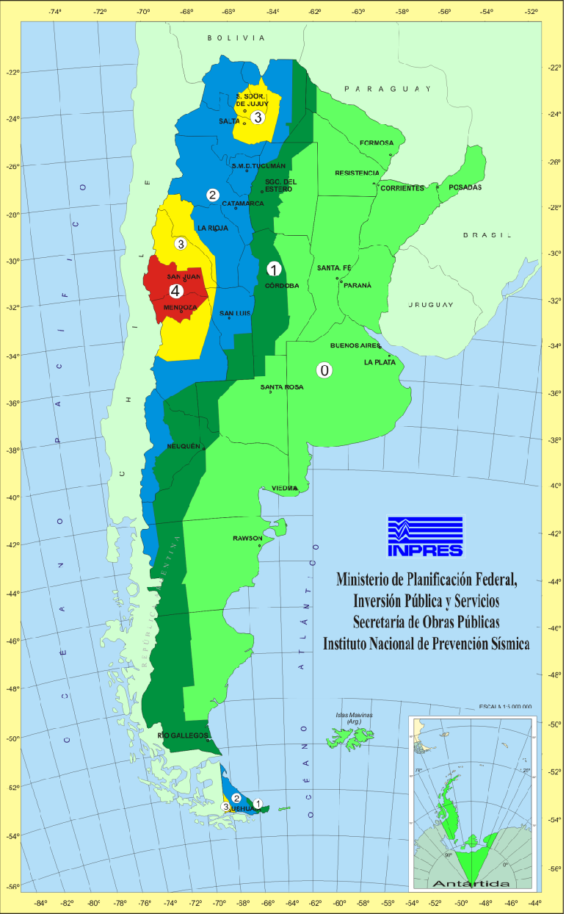
Dónde caen las principales ciudades, según ese Anexo:
| Zona | Peligrosidad | as (aceleracion de diseño) | Ciudades (Anexo A) |
|---|---|---|---|
| 0 | Muy reducida | — | Provincias de Buenos Aires, Santa Fe, Entre Ríos, Corrientes y Misiones en su totalidad: CABA, La Plata, Mar del Plata, Rosario, Santa Fe, Paraná, Corrientes, Posadas |
| 1 | Reducida | 0,08 | Córdoba capital, Río Cuarto, Neuquén capital, Añelo, Santiago del Estero capital |
| 2 | Moderada | 0,15 | Tucumán y Catamarca en su totalidad, San Luis capital, La Rioja capital, Bariloche, San Martín de los Andes |
| 3 | Elevada | 0,25 | Salta capital y el valle de Lerma, S. S. de Jujuy, Tunuyán, San Carlos, San Rafael, Jáchal |
| 4 | Muy elevada | 0,35 | Gran Mendoza completo (Capital, Godoy Cruz, Guaymallén, Las Heras, Luján de Cuyo, Maipú) y Gran San Juan completo (Capital, Chimbas, Rivadavia, Rawson, Santa Lucía, Pocito) |
as es la aceleración máxima efectiva del suelo para el sismo de diseño, en fracción de g
Tambien existen otros factores que ponderan en el diseño de la estructura:
-Clasificación del sitio, el suelo amplifica o atenúa las ondas sísmicas.
-Factor de riesgo de la construcción, el reglamento agrupa construcciones según las consecuencias de sus fallas.
Puesto que no se cuenta con información respecto al suelo de fundación y que se analiza en su totalidad estructuras de tanques. Solo se considera la zonificación propuesta por el CIRSOC en el analisis.
Para clasificar a cada tanque según la zona sísmica en la que se encuentra se descarga la capa SIG de riesgo sísmico publicada por el Ministerio de Defensa (https://www.ign.gob.ar/NuestrasActividades/InformacionGeoespacial/CapasSIG).
Luego se procede a integrarlas en la tabla de datos de tanques asociando cada coordenada con el respectivo poligono de zonificación y se verifica en el mapa interactivo a que zona sísmica pertenece cada tanque inventariado y su riesgo asociado.
Histograma de riesgo sísmico
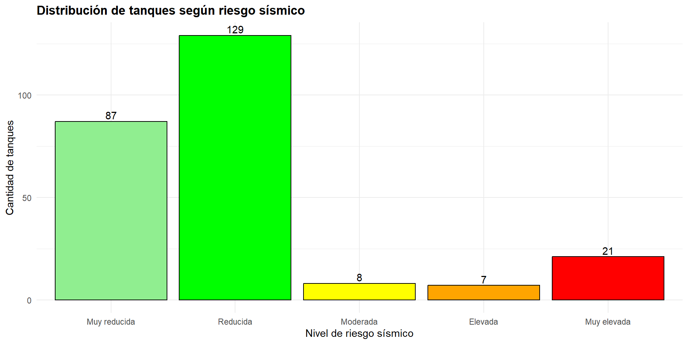
La distribución de los tanques según nivel de riesgo sísmico muestra que una proporción importante de las instalaciones se encuentra emplazada en regiones clasificadas como zonas de baja peligrosidad según el reglamento INPRES-CIRSOC 103. Sin embargo, tambien existe en menor tanques construidos en zonas de riesgo moderado, elevado o muy elevado.
Esto implica que la amenaza sísmica constituye una condición relevante para la infraestructura analizada en algunos casos y justifica la incorporación del riesgo sísmico dentro del estudio de vulnerabilidad estructural.
No obstante, debe distinguirse claramente entre peligro sísmico, asociado a la ubicación geográfica, y vulnerabilidad estructural, asociada a las características propias de cada tanque.
Riesgo por vientos
Las consideraciones respecto a nivel de riesgo por vientos se toma de la siguiente referencia.
Fuente: (CIRSOC 102 edicion 2025 -
https://icomunicacion.inti.gob.ar/2025/cirsoc/Reglamento-CIRSOC-102-25.pdf
https://edici.com.ar/blog/cirsoc-102-2025-como-cambia-el-calculo-de-viento)
El reglamento argentino CIRSOC 102 establece los requisitos y procedimientos para calcular las acciones del viento sobre las construcciones con el fin de garantizar la seguridad estructural.
Las cargas de viento de diseño para estructuras, se determina en función del tipo de estructura y de la ubicación geografica del mismo. A partir de esa información se determina una velocidad para el cálculo.
| Categoría | Qué es | Mapa | Recurrencia |
|---|---|---|---|
| I | Bajo riesgo para la vida ante falla: depósitos y galpones normalmente no ocupados | Figura 1.5-1C | 300 años |
| II | La vasta mayoría: naves industriales, viviendas, comercios | Figura 1.5-1A | 700 años |
| III | Falla con riesgo sustancial: reuniones multitudinarias, escuelas, sustancias peligrosas | Figura 1.5-1B | 1.700 años |
| IV | Instalaciones esenciales: hospitales, policía, bomberos, centros de emergencias | Figura 1.5-1B | 1.700 años |
En el caso de estudio, los tanques almacenan sustancias peligrosas y su falla representa un riesgo sustancial, por lo que quedan encasillados en la categoria III. Vientos de referencia:
| Ciudad | Viento_Cat. I | Viento_Cat. II | Viento_Cat. III y IV |
|---|---|---|---|
| Bahía Blanca | 62,8 | 67,4 | 72,2 |
| Bariloche | 52,5 | 56,3 | 60,4 |
| Buenos Aires | 51,4 | 55,1 | 59,1 |
| Catamarca | 49,1 | 52,7 | 56,5 |
| Comodoro Rivadavia | 77,1 | 82,7 | 88,7 |
| Córdoba | 51,4 | 55,1 | 59,1 |
| Corrientes | 52,5 | 56,3 | 60,4 |
| Formosa | 51,4 | 55,1 | 59,1 |
| La Plata | 52,5 | 56,3 | 60,4 |
| La Rioja | 50,3 | 53,9 | 57,8 |
| Mar del Plata | 58,3 | 62,5 | 67,0 |
| Mendoza | 44,6 | 47,8 | 51,2 |
| Neuquén | 54,8 | 58,8 | 63,0 |
| Paraná | 59,4 | 63,7 | 68,3 |
| Posadas | 51,4 | 55,1 | 59,1 |
| Rawson | 68,5 | 73,5 | 78,8 |
| Resistencia | 51,4 | 55,1 | 59,1 |
| Río Gallegos | 68,5 | 73,5 | 78,8 |
| Rosario | 57,1 | 61,2 | 65,7 |
| Salta | 40,0 | 42,9 | 46,0 |
| San Juan | 45,7 | 49,0 | 52,5 |
| San Luis | 51,4 | 55,1 | 59,1 |
| San Miguel de Tucumán | 45,7 | 49,0 | 52,5 |
| San Salvador de Jujuy | 38,8 | 41,6 | 44,7 |
| Santa Fe | 58,3 | 62,5 | 67,0 |
| Santa Rosa | 57,1 | 61,2 | 65,7 |
| Santiago del Estero | 49,1 | 52,7 | 56,5 |
| Ushuaia | 68,5 | 73,5 | 78,8 |
| Viedma | 68,5 | 73,5 | 78,8 |
La definición de V es una ráfaga de 3 segundos, a 10 m de altura, en exposición C en metros/segundo.
A partir de los datos de coordenadas de cada tanque procedemos a asociarlo a la ciudad más cercana con valores de vientos definida, y luego a la velocidad de diseño que debería utilizarse en su cálculo estructural.
Verificamos en el mapa interactivo a que zona por vientos pertenece cada tanque inventariado y su riesgo asociado.
Histograma de valores de viento esperados:
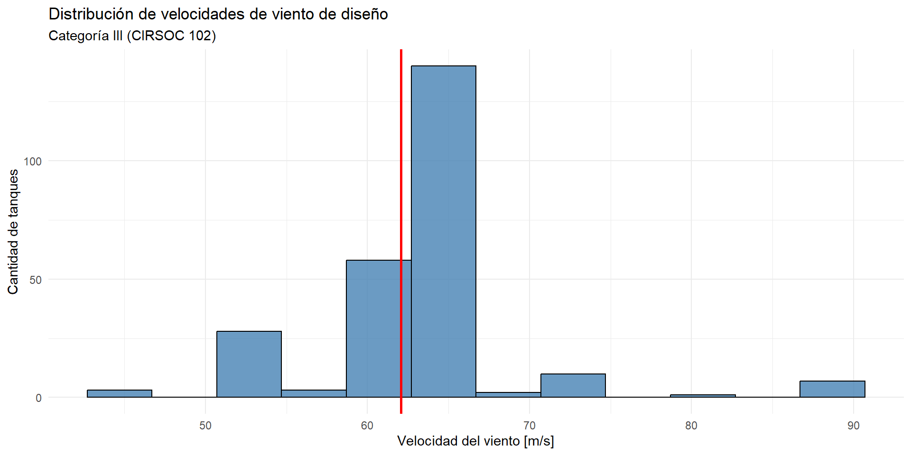
5 - MODELOS ESTADÍSTICOS
Variables cuantitativas para ACP
Debido a que no hay independencia entre las variables, sino que presentan cierto grado de correlación, se realiza el Análisis de Componentes Principales (ACP) con las variables cuantitativas de interés eliminando los registros con valores faltantes.
Rango de las variables
Se observan los rangos de las variables para definir si se estandarizan para el análisis.
volumen ano_montaje e_virolas e_altura e_diametro esbeltez
[1,] 464.32 1921 1 3.6 7.82 0.1697117
[2,] 50000.00 2022 12 18.0 60.69 1.5842019
e_espesor1er_virola viento_cat_III_ms
[1,] 4.75 44.7
[2,] 25.40 88.7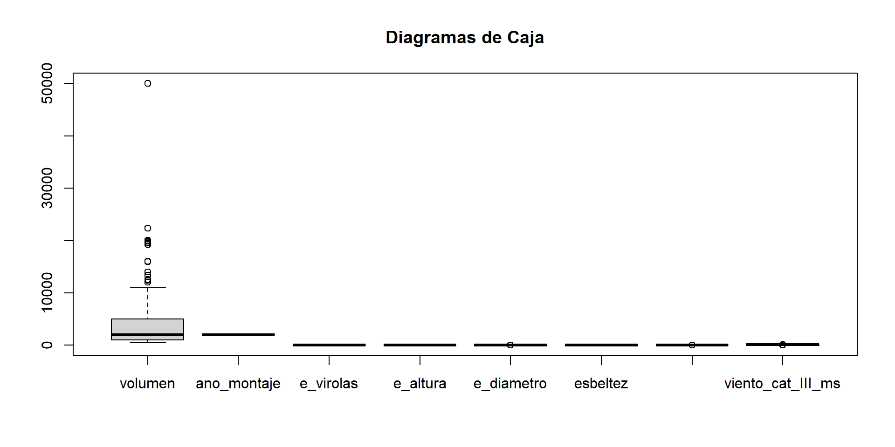
Se observa que la variable volumen tiene un rango muy superior al resto por lo que se realiza el escalado de las variables al generar el modelo para trabajar con un ACP normado.
Varianza explicada
Una vez generado el ACP se evalua la cantidad de componentes principales a mantener.
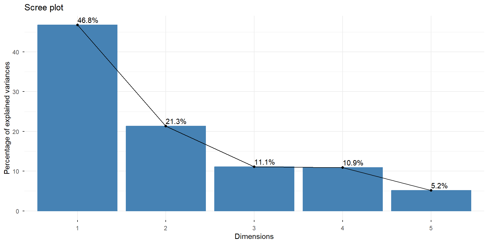
eigenvalue variance.percent cumulative.variance.percent
Dim.1 3.7415783 46.769729 46.76973
Dim.2 1.7065154 21.331442 68.10117
Dim.3 0.8883860 11.104825 79.20600
Dim.4 0.8743011 10.928764 90.13476
Dim.5 0.4134095 5.167618 95.30238Si se utiliza el criterio de ladera (donde se encuentra el “codo” de la gráfica) se podrían tomar hasta 3 componentes que explicarían el 88.07% de la variabilidad.
Utilizando el criterio de Kaiser (𝜆 > 1) se tomarían solo 2 componentes. que explicarían el 75.52% de la variabilidad.
Si se aplica el criterio del bastón roto se tomarían también 2 componentes.
[1] 0.3397 0.2147 0.1522 0.1106 0.0793 0.0543 0.0335 0.0156comp 1 comp 2 comp 3 comp 4 comp 5
0.4908 0.2238 0.1165 0.1147 0.0542 Finalmente, una vez evaluados los diferentes criterios, se decide mantener los primeros 2 componentes principales que explican el 75.52% de la variabilidad.
Analisis de las Variables del ACP
Se muestran las variables en el plano factorial para un analisis preliminar.
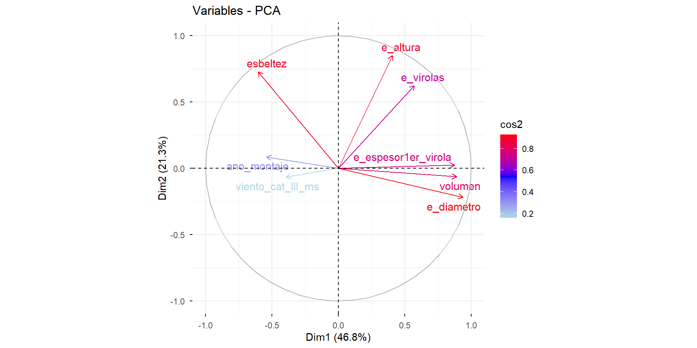
De la grafica se observan las siguientes características:
e_espesor1er_virola,e_diametroyvolumenestán muy correlacionadas. la primera componente principal puede interpretarse como un eje asociado principalmente al tamaño y capacidad de almacenamiento de los tanques.e_alturaye_virolastambién están muy correlacionadas entre sí. La segunda componente principal se encuentra asociada principalmente a variables relacionadas con la configuración geométrica y constructivaano_montaje,tiene correlación negativa respecto a las variables que definen la capacidad del tanque. Dando indicios que la capacidad de almacenamiento fueron aumentando umen.a lo largo de los años, priorizando tanques de menor volumen.
El ACP permite confirmar la existencia de relaciones físicas esperables entre las variables, particularmente entre volumen, diámetro, espesor de virola y altura, reflejando las dependencias geométricas inherentes al diseño de los tanques de almacenamiento.
Analisis de los Individuos del ACP
Se muestran los individuos en el plano factorial para un analisis preliminar.
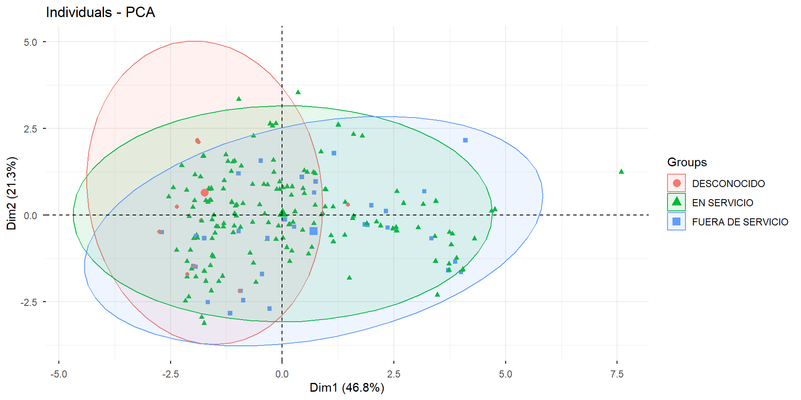
Se observa una gran dispersión con centro en el plano factorial y también mucha superposición entre los individuos APTOS y NO APTOS, por lo que se concluye que ninguna de las variables cuantitativas ayudaría a clasificar los tanques entre APTOS y NO APTOS.
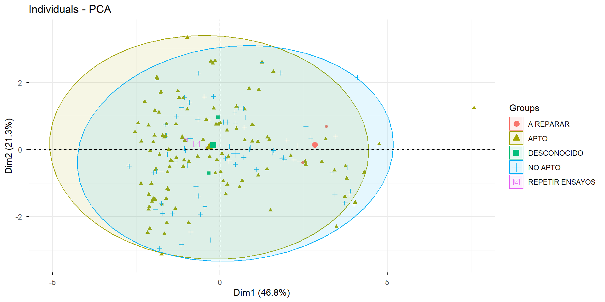
De igual manera, se observa superposición entre grupos segregados por resultado del informe, dando indicios que no hay una asociación clara entre características físicas del tanque y resultado esperado del reporte.
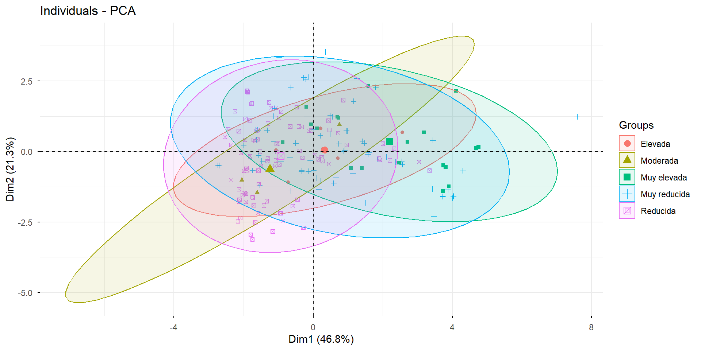
El riesgo sísmico no parece tener una asociación clara con las dimensiones ó geometría de los tanques.
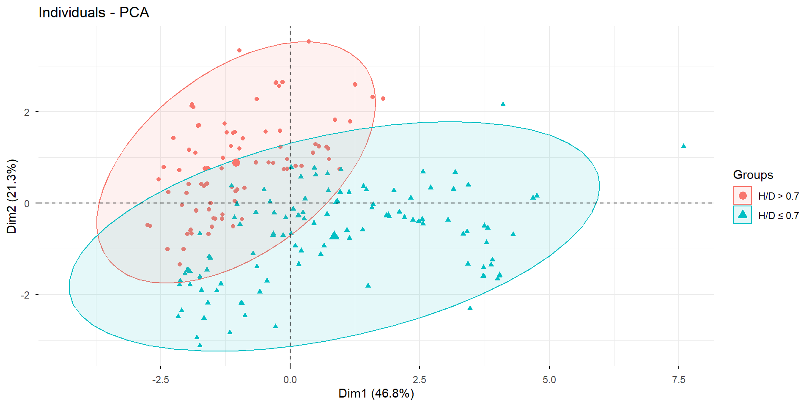
Al agrupar los tanques por el valor crítico de esbeltez 0.7, se visualiza una asociación entre dos grupos de tanques, por un lado los tanques de grandes volumenes tienden a no superar la esbeltez crítica, mientras que los tanques de volumenes mas bajo puede ser de alta esbeltez o no.
Variables cualitativas para ACM
Se realiza el Análisis de Correspondencias Múltiples (ACM) con las variables cuantitativas de interés eliminando los registros con valores faltantes si los hubiera.
Buscamos identificar asociaciones entre las categorías y detectar grupos de individuos con perfiles similares.
Puesto que la zona sismica determina el riesgo sísmico, se descarta zona_sismica y ya que el viento de diseño fue considerado en el ACP se descarta ciudad_cerca_viento.
A su vez, buscamos observar posibles asociasiones de tanques independientemente de la empresa que lo opera para enfocarnos a caracteristicas estructurales.
Ejecutar el ACM
Varianza explicada
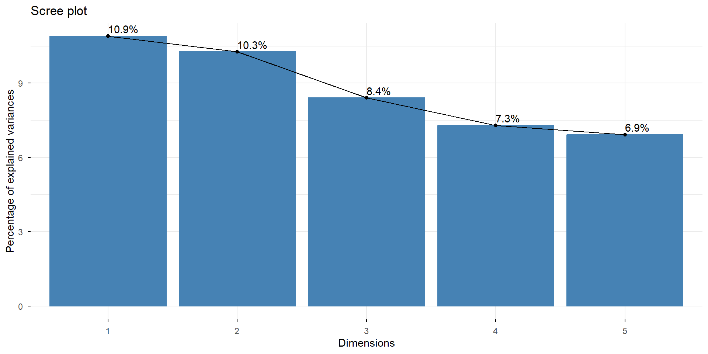
Se observa que las variables cualitativa en sus dos primeras dimensiones aportan un 21% de la variabilidad explicada. Considerar las 5 primeras comoponentes principales no logran explicar más de 40% de la inercia total. En un ACM es habitual que variabilidad se disperse entre muchas dimensiones e implica que las relaciones entre las categorías son complejas y no pueden resumirse completamente en pocas dimensiones.
Mapa de categorías
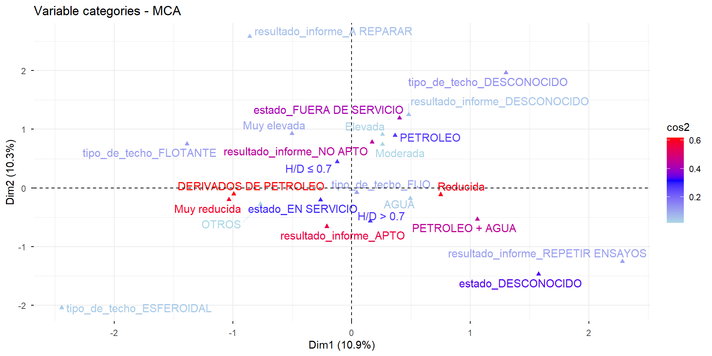
La proximidad observada entre las categorías “Derivados de petroleo”, “En servicio”, “Informe Apto” y niveles riesgo de riesgo sísmico indica que estas características tienden a aparecer asociadas con mayor frecuencia dentro de la base analizada. Sin embargo, esta asociación no debe interpretarse como una relación causal. El ACM permite identificar patrones de coexistencia entre categorías, pero no establecer mecanismos causa-efecto entre ellas.
Por lo tanto, únicamente puede afirmarse que dichas características aparecen relacionadas dentro de la muestra estudiada.
Una posible interpretación es que tanques que almacenan derivados de petróleo pueden estar sometidos a rutinas de mantenimiento más frecuentes y que se concentran en zonas costeras donde el riesgo sismico para Argentina es menor.
Contribuciones de las categorias en las dimensiones 1:
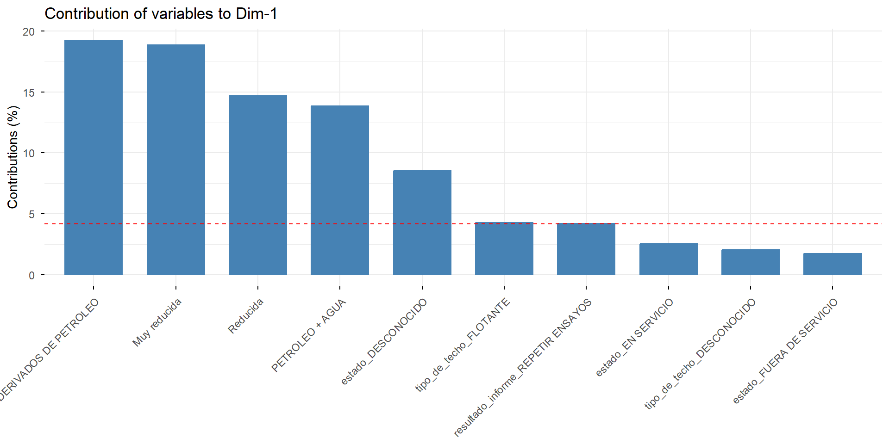
Contribuciones de las categorias en las dimensiones 2:
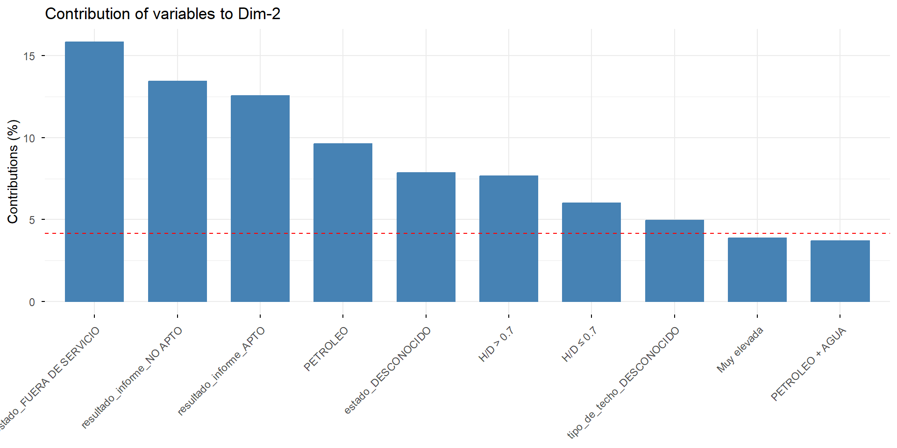
El Análisis de Correspondencias Múltiples permitie identificar dos estructuras principales en los datos. La primera dimensión esta dominada por las categorías de tipo de producto y de riesgo sísmico, separando emplazamientos de baja peligrosidad de aquellos asociados a mayores niveles de amenaza sísmica. La segunda dimensión esta relacionada principalmente con el estado operativo y el resultado de las inspecciones, diferenciando tanques aptos y en servicio de aquellos clasificados como no aptos o fuera de servicio. Asimismo, se observa una proximidad entre las categorías “No apto”, “Fuera de servicio” y niveles elevados de riesgo sísmico, sugiriendo una asociación entre estas características dentro de la población analizada.
ACM mixto
Con el propósito de identificar perfiles de tanques con características similares y explorar posibles patrones asociados, se propone desarrollar un análisis de clustering considerando las características geométricas, constructivas y operativas de los tanques relevados, es decir, todas las variables cuantitativas y cualitativas relevadas.
Análisis de clustering y evaluación de influencia
En particular, se evaluará la influencia de la variable viento_cat_III_ms, que representa la velocidad básica de viento de referencia establecida por el reglamento CIRSOC 102-2025, asignada a cada tanque según la ciudad geográficamente más cercana a su emplazamiento.
Como alternativa se evaluará nuevamente la influencia de la variable riesgo_sismico, considerando todas las variables a diferencia del ACP, y finalmente se evaluará la influencia de la variable clase_esbeltez, que mostró ciertas asociaciones en el análisis del ACP y que representa un límite de riesgo por efectos de pandeo y colapso de las bases de los tanques.
Para ello, se desarrollarán cuatro modelos de clustering:
Modelo A1: clustering sin inclusión de variables extras
Se realizará un primer análisis excluyendo cualquier variable extra de influencia, manteniendo las restantes características. El objetivo será identificar perfiles constructivos y operativos sin incorporar explícitamente la condición asociadas a otras referencias, que serviran de base.
Modelo A2: clustering con inclusión de la variable de viento.
Se incorporará la velocidad básica de viento como variable cuantitativa, junto con las características geométricas, constructivas y operativas de los tanques. Este modelo permitirá identificar perfiles que contemplen tanto las particularidades de cada estructura como las condiciones geográficas de diseño desde el punto de vista de vientos.
Modelo A3: clustering con inclusión de la variable de sismo.
Se incorporará el riesgo sísmico como variable cualitativa, junto con las características geométricas, constructivas y operativas de los tanques. Este modelo permitirá identificar perfiles que contemplen tanto las particularidades de cada estructura como las condiciones geográficas de diseño desde el punto de vista sísmica.
Modelo A4: clustering con inclusión de la variable límite de esbeltez
Puesto que el valor de esbeltez 0.7 representa un límite caracteristico para el riesgo de pandeo, efectos sísmicos de viento a las estructuras se lo utilizara como cuarto modelo.
En todos modelos se utilizarán procedimientos de clustering para datos mixtos y se evaluará la calidad de las agrupaciones mediante índices de validación, particularmente el coeficiente Silhouette. Asimismo, se analizará la composición y estabilidad de los grupos obtenidos.
Finalmente, se compararán los resultados para determinar en qué medida la incorporación de la variable de extra modifica la conformación de los conglomerados. Esta comparación permitirá evaluar la influencia de las condiciones geográficas de diseño ó geométricas en la identificación de perfiles de tanques.
Distancia de Gower
La distancia de Gower es una medida de disimilitud diseñada para trabajar con bases de datos que contienen simultáneamente variables cuantitativas y cualitativas. En el trabajo fue utilizada porque los tanques están descritos mediante variables numéricas (volumen, diámetro, altura, espesor, velocidad de viento) y variables categóricas (estado, producto, tipo de techo).
Para cada par de tanques, Gower calcula una distancia parcial en cada variable:
Para variables numéricas utiliza la diferencia entre valores, normalizada por el rango de la variable.
Para variables categóricas asigna 0 si las categorías coinciden y 1 si son diferentes.
Luego promedia todas las distancias parciales obteniendo un valor entre:
\(0≤d≤1\)
donde:
0 significa que los tanques son muy similares.
1 significa que son completamente diferentes.
Se compara de 2 a 6 grupos utilizando PAM (Partition Around Medoids)
Una vez calculadas las distancias de Gower, se aplicó el algoritmo PAM (Partition Around Medoids) para identificar grupos de tanques con características similares.
El objetivo de PAM es dividir los datos en k conglomerados de forma que los tanques dentro de un mismo grupo sean lo más parecidos posible y los tanques de grupos distintos sean lo más diferentes posible.
A diferencia de k-means:
| K-means | PAM |
|---|---|
| Usa centroides (promedios) | Usa medoids (observaciones reales) |
| Requiere distancia euclídea | Puede usar cualquier distancia |
| Más sensible a outliers | Más robusto a outliers |
Comparamos índice Silhouette
El coeficiente de Silhouette es una medida que se utiliza para evaluar la calidad de un agrupamiento (clustering). Indica qué tan bien asignada está cada observación a su grupo y qué tan separada está de los demás grupos
| Silhouette | Interpretación |
|---|---|
| Cerca de 1 | Muy bien agrupado |
| 0.5 - 0.7 | Buena separación |
| 0.25 - 0.5 | Agrupamiento débil-moderado |
| < 0.25 | Agrupamiento débil |
| Negativo | Probablemente mal asignado |
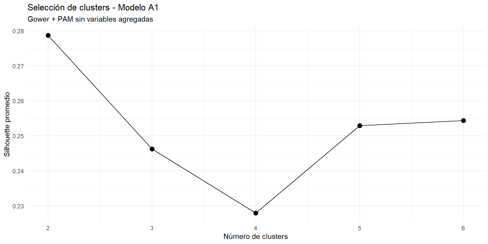
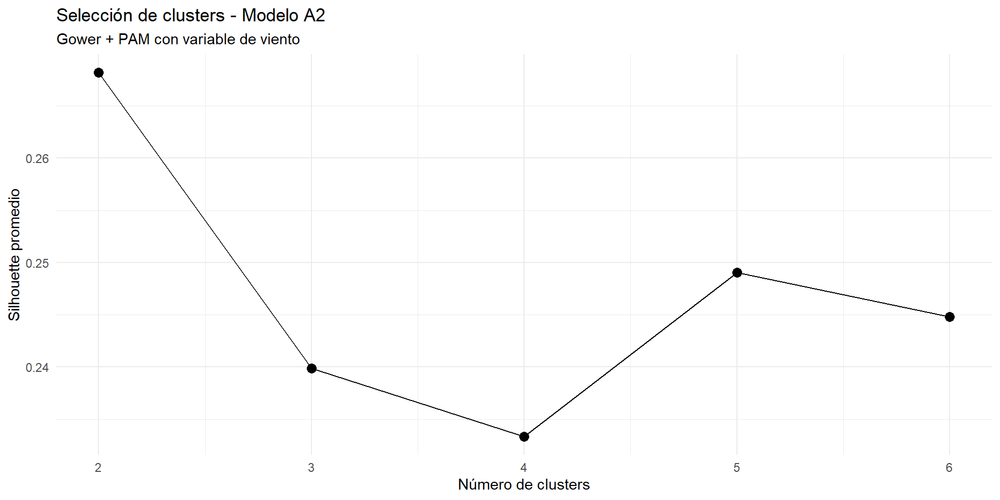
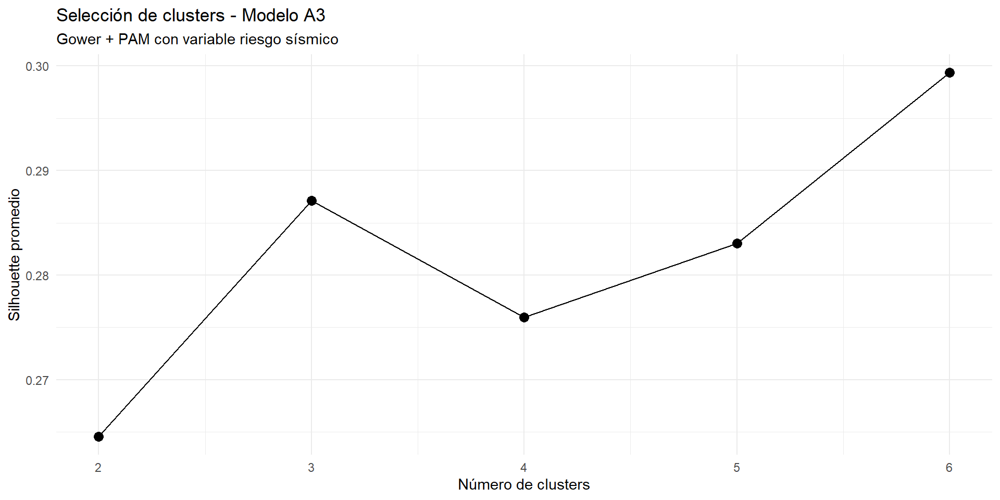
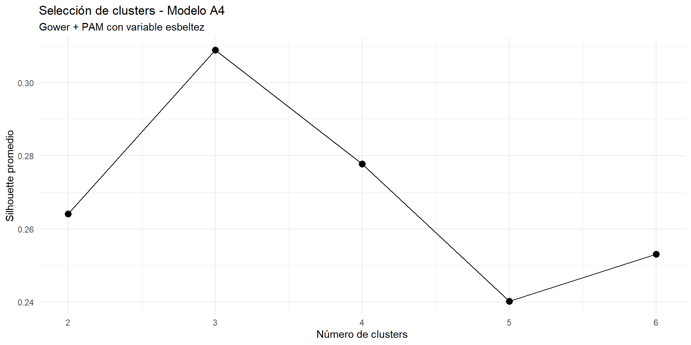
Los gráficos muestran un comportamiento bastante consistente entre los dos primeros modelos: ambos identifican que la solución de dos clusters es la que presenta el mejor coeficiente Silhouette. Sin embargo, los valores obtenidos son relativamente bajos. Luego la mejor representación para riesgo sísmico es de 6 clusters y para esbeltez 3 clusters
Respecto al modelo A1, La solución de dos grupos presenta el mejor resultado y al pasar de dos a tres clusters, la calidad de agrupación cae considerablemente. A partir de cuatro grupos hay una recuperación gradual, pero no se alcanza el valor inicial. Esto sugiere que dividir los datos en tres o más grupos produce conglomerados menos cohesionados o menos diferenciados. Al no tener variables incorporadas como influencia se toma como referencia y son los valores que se pretende mejorar en los demas modelos
Respecto al modelo A2, nuevamente, dos clusters obtiene el mayor Silhouette. La solución de seis grupos no presenta una recuperación importante, sin embargo, agrupar los tanques en base a dos categorías de exposición a vientos y dimensiones no tiene un sustento practico para el analisis de los datos.
Es interesante que, al excluir la variable de viento, la solución de seis grupos mejora respecto de las alternativas intermedias, aunque sigue siendo inferior a k = 2.
Una posible hipótesis es que la incorporación de la variable de viento produce una mejora muy leve en la calidad de la agrupación, pero no modifica la cantidad de clusters que resulta preferible según Silhouette.
Al considerar el modelo A3, se observa que la mejor agrupación se logra al considerar 6 clusters y que el índice de silhouette mejora respecto al modelo base y al modelo que clasifica según vientos.
Esto tiene cierta consistencia en que existen 5 zonas sísmicas, sin embargo deberiamos justificar aún un cluster extra y caracterizar geometricamente 6 perfiles de tanques lo cual nuevamente no tienen sustento práctico.
Finalmente, el modelo A4 presenta el mejor indice de silhouette para una agrupación de 3 clusters con un valor cercano al 0,31. Esto da indicios que los tanques según su esbeltez, tamaño y geometría podrían agruparse en 3 grupos con caracteristicas similares.
sin embargo, no podemos afirmar todavía que la esbeltez crítica tenga una influencia importante en la conformación de los grupos.
Todos los modelos tienen Silhouette bajos en torno a 0,30. Esto indica que la estructura de agrupamiento es débil a moderada, ya que existe cierta tendencia a formar dos, tres y seis grupos según el modelo considerado, pero las observaciones no presentan una separación muy marcada.
Es decir, esto significa que debemos evitar presentar los conglomerados como perfiles claramente diferenciados.
Ajustamos los modelos 1 como referncia para los otros modelos y el modelo 2 a k=2, el modelo 3 a k=6 y el modelo 4 a k=3
1 2
113 139
1 2
70 182
1 2 3 4 5 6
31 72 41 27 40 41
1 2 3 4 5 6
21 81 22 16 47 65
1 2 3
61 103 88
1 2 3
59 103 90 Se observan diferencias en la composición de los clusters cuando la variable en cuestión está presente. A continuación analizaremos la relevancia de dicha diferencia.
A2
A1 1 2
1 67 46
2 3 136[1] 0.3701401 A3
A1 1 2 3 4 5 6
1 21 0 4 5 1 0
2 0 62 5 0 0 5
3 0 15 12 11 3 0
4 0 3 1 0 2 21
5 0 1 0 0 0 39
6 0 0 0 0 41 0[1] 0.5617384 A4
A1 1 2 3
1 55 5 1
2 2 45 56
3 2 53 33[1] 0.3002766El Adjusted Rand Index (ARI) mide la similitud entre dos particiones, ajustando la coincidencia esperada por azar. El ARI toma valores entre -1 y 1:
| Valor ARI | Interpretación |
|---|---|
| 1 | Las particiones son idénticas |
| ≈ 0 | La concordancia es similar a la esperada por azar |
| < 0 | Menor coincidencia que la esperada por azar |
| 0.4 - 0.6 | Concordancia moderada |
| > 0.8 | Concordancia muy alta |
Un ARI de 0,3 a 0,57 indica una concordancia parcial entre los modelos, pero también evidencia que la incorporación de las variable en cuestión modifica la estructura de agrupamiento.
Hay tres resultados relevantes:
El modelo A2 que considera viento seleccionó dos clusters como solución preferible según Silhouette en concordancia con modelos base A1. Igual cantidad de clusters, sin mejora significativa del indice de silhouette y ARI alto lleva a pensar que este modelo no aporta una mejora significativa y se descarta como opción
En el modelo A3, incorporar el riesgo sísmico permitió una mejora en el indice de silhouette pero al costo de considerar 6 clusters, lo cual puede justificarse desde el punto de vista sísmico pero no desde un punto de vista dimensional y geometrico de los tanques.
Finalmente el modelo A4 que considera esbeltez, introdujo una mejora en el índice silhouette al considerar 3 clusters. El valor 0,31 , si bien sigue siendo bajo donde indica a lo sumo un agrupamiento moderado, es el mejor valor encontrado y coincide con el valor ARI más bajo, que si bien no descarta que el reagrupamiento sea objeto del azar, introduce un posible concepto extra para clasificar los tanques: la esbeltez.
Una posible interpretación es que la variable de esbeltez crítica introduce información que modifica algunos perfiles, pero no transforma completamente la estructura general de los grupos, en tanques diferenciados por su volumen, su geometria y su esbeltez.
Caracterizamos los clusters
Compararemos las variables geométricas para A1
# A tibble: 2 × 9
cluster_A1 n volumen altura diametro virolas espesor viento esbeltez
<fct> <int> <dbl> <dbl> <dbl> <dbl> <dbl> <dbl> <dbl>
1 1 113 3000 11.8 21 7 9.67 63 0.514
2 2 139 1306 10.6 13 6 7.9 63 0.750Y luego para A2,
# A tibble: 2 × 8
cluster_A2 n volumen altura diametro virolas espesor esbeltez
<fct> <int> <dbl> <dbl> <dbl> <dbl> <dbl> <dbl>
1 1 70 3000 11.4 20.2 7 9.53 0.539
2 2 182 1706 11.8 14.6 6 7.94 0.709Para A3,
# A tibble: 6 × 8
cluster_A3 n volumen altura diametro virolas espesor esbeltez
<fct> <int> <dbl> <dbl> <dbl> <dbl> <dbl> <dbl>
1 1 21 3000 11.9 21 7 8.73 0.556
2 2 81 3016 12 18.3 7 9.53 0.655
3 3 22 14000 11.8 42.2 7 19.0 0.323
4 4 16 10000 12.8 30.4 8 14.3 0.428
5 5 47 1246 10.4 13.7 6 6.88 0.668
6 6 65 1000 10 10.7 5 6.35 0.883Y para el modelo A4
# A tibble: 3 × 8
cluster_A4 n volumen altura diametro virolas espesor esbeltez
<fct> <int> <dbl> <dbl> <dbl> <dbl> <dbl> <dbl>
1 1 59 5000 11.8 24.3 7 9.67 0.473
2 2 103 1000 12 10.8 6 6.75 0.926
3 3 90 3234 10.5 21.2 6 9.76 0.477Comparación gráfica
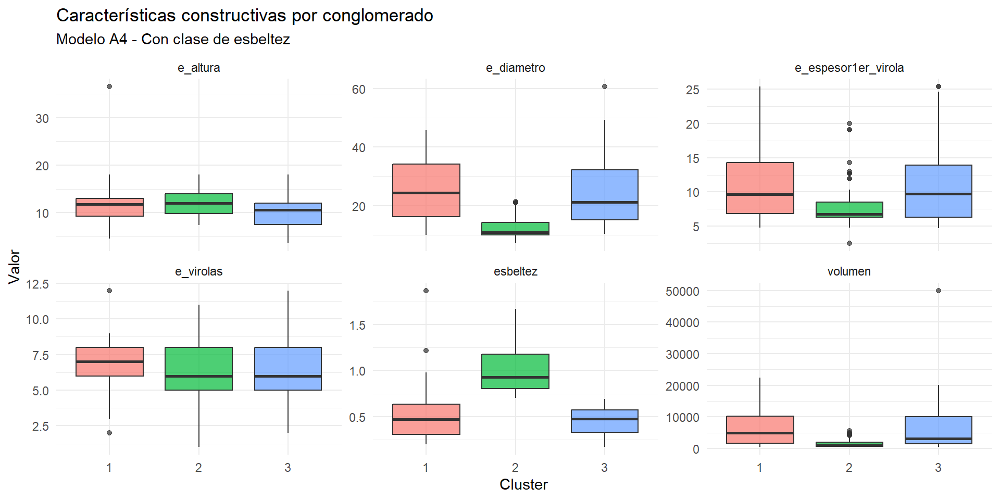
Y graficamos los clusters
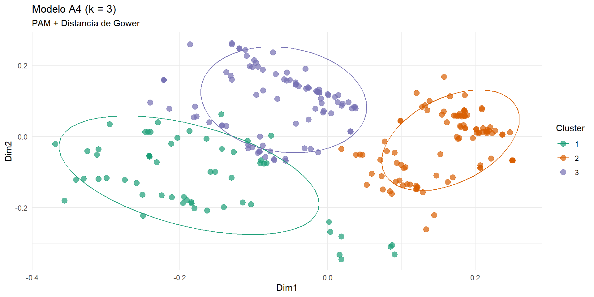
Se observa que el modelos A4 están identificando esencialmente tres perfiles constructivos de tanques:
- Tanques de grandes volumenes.
Corresponde a tanques de gran volumen y baja esbeltez. Son estructuras de gran diámetro, típicas de refinerías, terminales de almacenamiento y grandes instalaciones de proceso. Debido al elevado inventario almacenado, una eventual falla estructural puede generar consecuencias operativas y ambientales significativas.
- Tanques esbeltos de volumen moderados a bajos.
Corresponde a tanques de bajo volumen y elevada esbeltez. Desde el punto de vista estructural representan el perfil más vulnerable frente a fenómenos de inestabilidad, ya que presentan relaciones H/D cercanas o superiores al límite de referencia de 0,7 identificado en la bibliografía sobre daño sísmico.
- Tanques no esbeltos de volumenes moderados a bajos.
Corresponde a tanques de volumen moderado y baja esbeltez. Constituyen una situación intermedia entre los grandes tanques de almacenamiento y los tanques esbeltos de menor capacidad. Presentan configuraciones geométricas relativamente robustas y representan una parte importante de las instalaciones analizadas.
Conclusiones sobre modelo mixto
La aplicación de técnicas de clustering sobre los registros permitió identificar tres perfiles exploratorios de tanques de almacenamiento, diferenciados principalmente por sus características geométricas y de almacenamiento. El primero reúne tanques de mayor capacidad, diámetro, altura y espesor de la primera virola, mientras que el segundo y tercero concentra tanques de dimensiones y capacidades menores pero diferenciados por ser o no esbeltos.
Con el propósito de evaluar la influencia de las condiciones de exposición al climáticas y geológicas en la conformación de estos perfiles, se compararon dos modelos: uno que incorporó la velocidad básica de viento de referencia establecida por el CIRSOC 102-2025 y otro que incorporó el riesgo sismico segun CIRSOC 103-2018.
Ambos modelos identificaron conglomerados y presentaron resultados en cuanto a las características constructivas que distinguen a los grupos. Sin embargo, la comparación de las asignaciones evidenció modificaciones en la composición de los conglomerados, que no son significativas ni cuenta con un sustento técnico en cuanto a las dimensiones de los tanques. El índice Adjusted Rand fue de alto, indicando una concordancia parcial entre ambas particiones por lo que se descartaron los modelos al considerar que se trataba de conglomerados artificiales.
En cuanto a la calidad del agrupamiento, el modelo que incorporó la variable esbeltez obtuvo un coeficiente Silhouette de 0,31, frente a 0,275 del modelo base. Esta diferencia representa una mejora leve, por lo que no puede considerarse que la incorporación de dicha variable produzca una mejora sustancial en la separación de los grupos, sino solo una referencia.
En consecuencia, los resultados sugieren que las características geométricas y constructivas constituyen los principales elementos diferenciadores de los perfiles identificados. La variable esbeltez aporta información adicional que modifica parcialmente la asignación de las observaciones, aunque no altera la estructura general de los perfiles de manera significativa.
Finalmente, los conglomerados obtenidos deben interpretarse como una clasificación exploratoria de los tanques, útil para reconocer tipologías constructivas y analizar semejanzas entre sus características, sin que ello implique una separación estadística fuerte entre los grupos.
6-Conclusiones generales
¿Cómo pueden caracterizarse los tanques incluidos en la base de datos desde el punto de vista de dimensione6¿s, tipos de techo, ubicación, fluido?
Los tanques analizados pueden agruparse principalmente según su capacidad de almacenamiento, geometría y esbeltez. Predominan los tanques de techo fijo, utilizados para almacenamiento de petróleo, mezclas de petróleo y agua, combustibles y agua de formación. Desde el punto de vista estructural se identificaron tres perfiles principales:
Tanques de grandes volumenes (media=5000 metros cúbicos) y esbeltez baja (media=0.47) .
Tanques esbeltos de bajo volumen (media=1000 metros cúbicos) y esbeltez alta (media=0.92) .
Tanques no esbeltos de volumenes moderados a bajos. (media=3000 metros cúbicos) y esbeltez baja (media=0.47) .

¿Es posible obtener alguna caracterización de los riesgos mas frecuentes?
Los riesgos identificados surgen de la combinación entre amenaza geográfica y vulnerabilidad estructural. Desde el punto de vista geográfico, una parte significativa de los tanques se encuentra expuesta a condiciones de riesgo sísmico y viento relevantes. Desde el punto de vista estructural, la geometría de los tanques, particularmente la esbeltez, aparece como una característica importante para la identificación de perfiles potencialmente más vulnerables frente a acciones extremas.